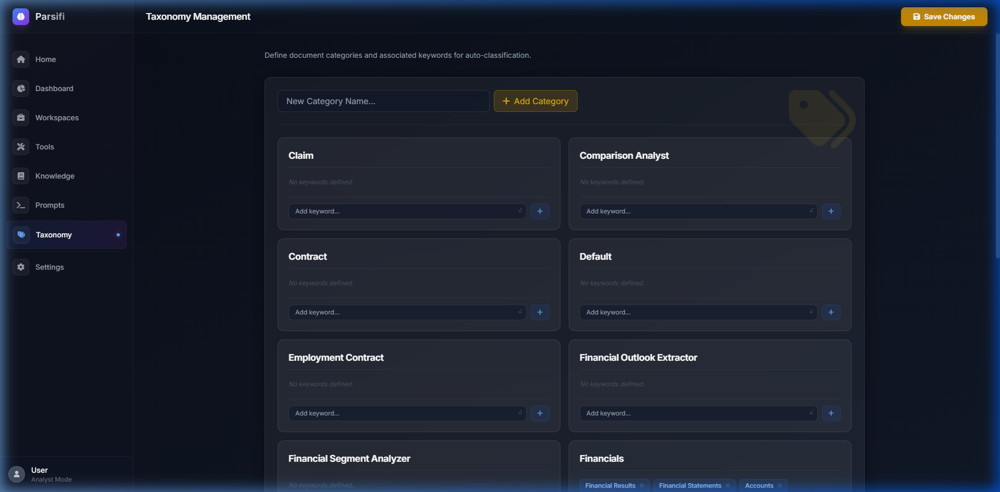

Taxonomy
Taxonomy enables Parsifi to automatically sort, route, and categorize your documents without manual intervention.

Defining Document Categories
In the Taxonomy settings, you can define specific Document Categories relevant to your workspace (e.g., "Invoices", "Resumes", "Legal Contracts").
Associating Keywords
For each category, you assign a list of trigger keywords. For example, the "Invoice" category might have
keywords: bil, invoice, due date, total amount, remit to.
Parsifi uses a 4-step Hybrid Categorization Pipeline (Primary Keyword Net -> LLM Semantic Fallback) to classify documents based on these settings. You can read more about how this pipeline executes during document ingestion in the Dashboard & Uploads guide.